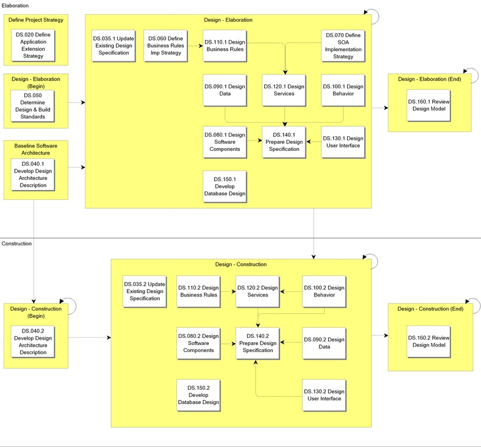
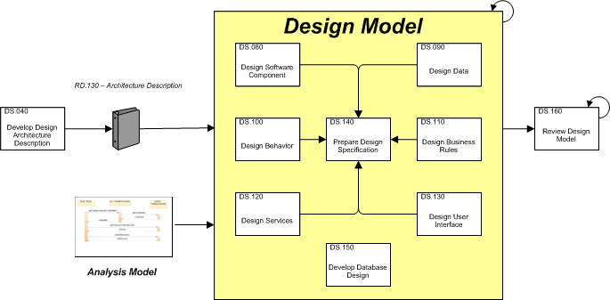

OUM |
Process Overview |
||
Method Navigation |
Current Page Navigation |
||
|
|
||||||||
In the Design process, the system is shaped and formed to meet all functional and supplemental requirements. This form is based on the architecture created and stabilized during the Analysis process. Thus, the work products produced during Analysis are an important input into this process. Design is the focus during the end of Elaboration phase and the beginning of Construction iterations. The major work products created in this process ultimately combine to form the Design Model that is used during the Implementation process. The Design Model can be used to visualize the implementation of the system.
The main work product or output of this process is the Design Model. The Design Model represents a collection of all Design work products, as appropriate, resulting from the following tasks:
Ultimately, the Design Model includes an object model that describes the design realization of the use cases and design classes that detail the analysis classes outlined in the Analysis Model. In addition, the Architecture Description initially developed in the Business Requirements process (RD.130), and enhanced in both the Requirements Analysis (RA.035) and Analysis (AN.040) processes is enriched with the new Module and Execution Views (DS.040).
 This process overview is written from the perspective of a Full Method View, utilizing ALL of the activities and tasks in this process. Therefore, all of the following sections provide comprehensive information. If your project is utilizing a tailored approach (for example, Technology Full Lifecycle View, Application Implementation View, Middleware Architecture View), not everything in this overview may be appropriate for your project. Please keep this in mind, especially when reviewing the Key Work Products and Tasks and Work Products sections. You should use OUM as a guideline for performing all types of information technology projects, but keep in mind that every project is different and that you need to adjust project activities according to each situation. Do not hesitate to add, remove, or rearrange tasks, but be sure to reflect these changes in your estimates and risk management planning. You should also consider the depth to which you address and complete each task based on the characteristics of your particular project or project increment. See Oracle's Full Lifecycle Method for Deploying Oracle-Based Business Solutions for further information on the scalability and adaptability of OUM.
This process overview is written from the perspective of a Full Method View, utilizing ALL of the activities and tasks in this process. Therefore, all of the following sections provide comprehensive information. If your project is utilizing a tailored approach (for example, Technology Full Lifecycle View, Application Implementation View, Middleware Architecture View), not everything in this overview may be appropriate for your project. Please keep this in mind, especially when reviewing the Key Work Products and Tasks and Work Products sections. You should use OUM as a guideline for performing all types of information technology projects, but keep in mind that every project is different and that you need to adjust project activities according to each situation. Do not hesitate to add, remove, or rearrange tasks, but be sure to reflect these changes in your estimates and risk management planning. You should also consider the depth to which you address and complete each task based on the characteristics of your particular project or project increment. See Oracle's Full Lifecycle Method for Deploying Oracle-Based Business Solutions for further information on the scalability and adaptability of OUM.
This process flow for this process follows:

The main goal of the Design Process is to detail the Design Model that will be used to implement the requirements.

First, take the Architecture Description (RD.130/RA.035/AN.040) and complete the architectural design by adding the Design Properties and the Module and Execution Views (DS.040). The Module View corresponds to the Architectural View of the Design Model from UP, while the Execution View corresponds to the Architectural View of the Deployment Model.
The Architecture Description (DS.040) provides an outline for the Design Model and the architecture. When defining the Module View, the analysis classes, and packages are mapped to modules and layers depending on the chosen software platform technology. Here the architect addresses how the conceptual solution can be realized with today's software platforms technologies. On the other hand, the Execution View describes the structure of system in terms of runtime platform elements and captures how the Module View will be assigned to these platform elements. Before completing the Architecture Description, it is reviewed and defects and changes are recorded and may be fed back to the design as a following task.
In the Component Data Design (DS.090), and the Component Behavior Design (DS.100) tasks, we take the work from the Analysis process further. Although the tasks have a different focus (Analysis versus Design), the tasks are often done in parallel, or back and forth, with the tasks, Analyze Data (AN.050) and Analyze Behavior (AN.060).
During Design, we move from a more generic model to a very specific design to determine the actual implementation of the requirement. The Component Data Design (DS.090) and Component Behavior Design (DS.100) describe how a specific use case will be realized, in terms of design classes and their objects. This also ensures traceability all the way to the Use Case Model (RA.023), via the Analysis Model. During these tasks, you will create MVC (Model/View/Controller) activity diagrams to fully design the use case's flow of events. The interaction diagrams you created in the Analysis Model are detailed to better specify message exchange among classes. Complex transaction processing is designed in sequence or collaboration diagrams.
Each Use Case Realization contains behavioral requirements for each class or subsystem it embraces. These requirements are specified and integrated into each class as part of the User Interface Design (DS.120), and Design Software Components (DS.080) tasks. For each class, various aspects are considered, such as operations, attributes, relationships, methods and interfaces, states pertaining to the class, dependencies and implementation of non-functional requirements. The design is split into the design of entity classes, boundary classes and control classes. For entity classes, the database technology and persistent mechanisms play an important role in shaping the design of entity classes. This task is closely related to the activity related to the Develop Database Design (DS.150) task. The analysis boundary classes pass via a design process and will often result in several boundary design classes. Any existing Functional Prototypes (IM.010) are to be used as inputs to this step. The user interface boundary classes are specified in terms of the software development tool in which the user interface is to be developed. Depending on the architecture chosen for the project, the approach for designing boundary classes may differ. The control classes are responsible for coordinating, sequencing, transactions, and controlling of other objects. Again, depending on the mechanism chosen to support these classes, the approach used to transform analysis control classes in design control classes might differ. Finally, you will refine the state diagrams of complex classes that you created in the Analysis process, and possibly create new ones based on the needs highlighted during the Design process.
When performing Develop Design Architecture Description (DS.040) task, you identify and optimize dependencies between components. Dependencies should be minimized wherever possible. Preferably, these dependencies should be with the interface of the component rather than the component itself. This ensures that the component may be substituted by another component that provides the same interface but a different internal design without affecting the dependent components.
In parallel with the tasks above, you also develop the Logical Database Design (DS.150). In this task, you translate the Domain Model into a Logical Database Design, applying the rules and principles of relational systems design. You may choose between various approaches. For example, in a bottom down approach, the design of the entity classes is used to create the database. Alternatively, in a bottom up approach, the database is modeled in parallel with the design of the entity classes. The Logical Database Design is used to create the physical database.
The output of these tasks is organized and combined to create a Design Model that is reviewed to discover defects before it is implemented. In an offshore project, this task is essential, since in many of the cases the implementation may be performed in an offshore environment by a different team of people than those who created the design Model. By discovering defects before the design model is shipped for implementation, rework is reduced and the productivity of the project as a whole is improved. On projects with a single, small team and short communication lines, and where the same team will perform the implementation, you may choose to skip this review.
In the same way as for the Analysis process, the Design process is performed iteratively, both in the Elaboration and the Construction phase, adding more detail with each iteration. The iteration starts with the Analysis tasks, and continues with the Design tasks. At the end of each iteration in the Elaboration phase, the result is fed into a new Functional Prototype (IM.010) that is reviewed by the ambassador users. The feedback from the validation of the Functional Prototype (RA.085) is prioritized and fed into the next iteration of the process, or if it was the last iteration, into the Construction phase.
In the Construction phase, the iteration continues with Implementation tasks that ensure that the components and database are created following the updated Analysis Model and Design Model. Finally, the iteration continues with Testing tasks before the result goes into the next iteration until the last iteration has been performed.
*This process has Application Implementation supplemental process guidance.
This process has supplemental guidance that should be considered if you are doing an application implementation. Use the OUM Application Implementation Supplemental Guide to access all application implementation supplemental information. You can also go directly to the Design process supplemental guidance.
The tasks and work products for this process are as follows:
| ID | Task | Work Product |
|---|---|---|
Elaboration Phase |
||
DS.020 |
Define Application Extension Strategy | Application Extension Strategy |
DS.035.1 |
Update Existing Design Specification | Updated Design Specification |
DS.040.1 |
Develop Design Architecture Description | Architecture Description |
DS.050 |
Determine Design and Build Standards | Design and Build Standards |
DS.060 |
Define Business Rules Implementation Strategy | Business Rules Implementation Strategy |
DS.070 |
Define SOA Implementation Strategy | SOA Implementation Strategy |
DS.080.1 |
Design Software Components | Software Component Design |
DS.090.1 |
Design Data | Component Data Design |
DS.100.1 |
Design Behavior | Component Behavior Design |
DS.110.1 |
Design Business Rules | Business Rules Design |
DS.120.1 |
Design Services | Service Design |
DS.130.1 |
Design User Interface | User Interface Design |
DS.140.1 |
Prepare Design Specification | Design Specification |
DS.150.1 |
Develop Database Design | Logical Database Design |
DS.160.1 |
Review Design Model | Reviewed Design Model |
Construction Phase |
||
DS.035.2 |
Update Existing Design Specification | Updated Design Specification |
DS.040.2 |
Develop Design Architecture Description | Architecture Description |
DS.080.2 |
Design Software Components | Software Component Design |
DS.090.2 |
Design Data | Component Data Design |
DS.100.2 |
Design Behavior | Component Behavior Design |
DS.110.2 |
Design Business Rules | Business Rules Design |
DS.120.2 |
Design Services | Service Design |
DS.130.2 |
Design User Interface | User Interface Design |
DS.140.2 |
Prepare Design Specification | Design Specification |
DS.150.2 |
Develop Database Design | Logical Database Design |
DS.160.2 |
Review Design Model | Reviewed Design Model |
The objectives of the Design process are:
*This process has Application Implementation supplemental process guidance.
Refer to Key Work Products for a complete list of key work products in OUM.
The following roles are required to perform the tasks within this process:
| Role ID | Name | Responsibility |
|---|---|---|
Implementing Organization |
||
| APS | Application / Product Specialist | Provide knowledge and guidance regarding the functionality, capabilities and implementation strategies for the product(s) being implemented. |
| BA | Business Analyst | Provide assistance with Application Extension Strategy. Define the Business Rules Implementation Strategy. Design the business rules. |
| DD | Database Designer | Develop all aspects of the data models for the system. Participate in the review of the Design Model. |
| DES | Designer | Define and maintain the responsibilities, attributes, relationships and special requirements of the classes making sure that each class fulfills its requirements. Analyze packages within which the classes are maintained. There may be several designers depending on the size of the project, each of which may be responsible for certain classes and packages assigned to them. You may want to use an object designer also. Define and maintain the responsibilities, attributes, relationships and special requirements of the classes making sure that each class fulfills its requirements. Responsible for the analysis of packages within which the classes are maintained. Responsible for the integrity of use cases as assigned. Ensure that all requirements are met and the diagrams, specifications and models are clear and precise. Design the services. Define major interfaces, navigation paths and widget details for each storyboard. |
| DV | Developer | Participate in definition and review of the Module and Execution Views. Collect, produce and write Design and Build Standards. Review the design classes in order to assure that they are compatible with the architecture. Design the more complex packages and classes. Review the Component Data Design in order to assure that it is compatible with the architecture. This person is also responsible for designing the more complex packages and classes. Participate in definition of the Component Behavior Design. Design the most complex use cases. Review the Logical Database Design in order to assure that the Design Model is compatible with the Logical Database Design. Participate in the review of the Design Model. |
| QM | Quality Manager | Participate in the review of the Design Model. |
| SA | System Architect | Define Application Extension Strategy. Lead the development of Module and Execution of Views and update the Architecture Description. Participate in the definition and review of the Module and Execution Views to gain an understanding of the application and its architecture. Provide input on the technical constraints to which the Business Rules Implementation Strategy must adhere. Define the SOA Implementation Strategy. Participate in definition and review of the design classes to gain an understanding of the application and its architecture. Participate in definition and review of the Component Data Design to gain an understanding of the application and its architecture. Participate in definition review of the Component Behavior Design. Participate in the review of the Logical Database Design to gain an understanding of the application and its architecture. Participate in the review of the Design Model. |
Customer (User) |
||
| KEY | Ambassador User | Provide feedback on the user interface prototypes. Participate in the review of the Design Model. |
The critical success factors of this process are:

Copyright © 2006, 2016, Oracle and/or its affiliates. All rights reserved.